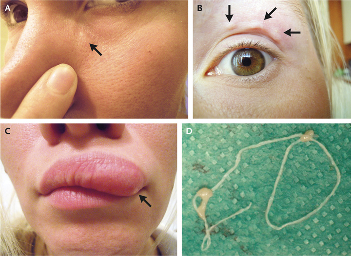

В июньском номере New England Journal of Medicine опубликовано описание случая дирофиляриоза у пациентки из Москвы.
Пациентка из Москвы делала в течение 2 недель фотографии странного «бугорка», который, передвигаясь, появлялся в разных частях её лица.
Впервые 32-летняя женщина заметила этот бугорок под левым глазом. Пять дней спустя он оказался над глазом, а 10 дней спустя — в её верхней губе.

Согласно данным анамнеза, женщину несколько раз кусали комары. Странный «бугорок» чесался, однако никаким другим образом пациентку не беспокоил.
Только когда наконец-то пациентка дошла до врача, он обнаружил причину перемещений «бугорка» по лицу женщины: это был паразит Dirofilaria repens. Диагноз, который был установлен у пациентки — дирофиляриоз (гельминтоз, вызванный паразитированием незрелых круглых червей-нематод рода Dirofilaria). Паразитический червь передвигался у пациентки в подкожной клетчатке лица. Пациентке потребовалось хирургическое вмешательство для удаления паразита, после чего она полностью выздоровела.
Описание этого случая было опубликовано в июньском номере New England Journal of Medicine.
Заражение человека при дирофиляриозе происходит трансмиссивным путём через укусы комаров, заражённых инвазионными личинками дирофилярий. Когда инфицированный комар кусает млекопитающее (обычно это собака или волк, значительно реже — кошки, другие животные и человек), он оставляет личинки в коже животного. Личинка растёт и продуцирует микрофилярий, другой комар поглощает их во время укуса и затем инфицирует ещё одного хозяина, повторяя цикл развития паразита снова и снова.
В России и странах СНГ за период 1956-1995 гг. инвазия D. repens была выявлена у 91 человека, однако за 1996-2001 гг. только в России выявлено 152 случая дирофиляриоза, главным образом у жителей эндемичных территорий юга страны. Однако данные по российским случаям выявления болезни не являются вполне достоверными, так как дирофиляриоз не входит в число паразитозов, подлежащих официальной регистрации. В некоторых регионах дирофиляриоз уже не считается редкой болезнью: в Ростовской области ежегодно выявляется от 1 до 12 случаев.
Migrating Dirofilaria repens.
Kartashev V, Simon F.
N Engl J Med. 2018 Jun 21;378(25):e35.